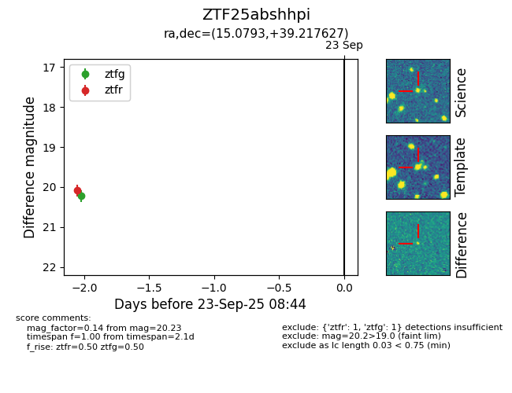

FINK: ZTF25abshhpi
Lasair: ZTF25abshhpi
ALeRCE: ZTF25abshhpi
ZTF25abshhpi (ztf,fink)
equatorial (ra, dec) = (15.0793,+39.21763)
galactic (l, b) = (124.8089,-23.62176)

last ztfg=20.23, ztfr=20.08
1 ztfg, 1 ztfr detections